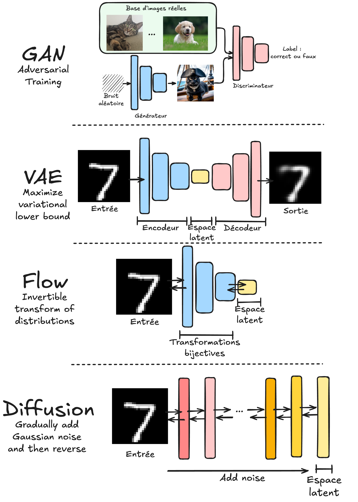

Introduction aux modèles génératifs#
Dans les cours précédents, nous avons étudié divers modèles de deep learning, notamment des modèles discriminatifs et génératifs. Ce cours se concentre sur les modèles génératifs, en expliquant leur fonctionnement et en proposant des exemples et des implémentations.
Modèles discriminatifs vs. génératifs#
Voici les définitions des modèles discriminatifs et génératifs :
Modèle discriminatif : Un modèle discriminatif vise à distinguer différents types de données. Pendant l’entraînement, il utilise des données d’entrée \(X\) et leurs labels correspondants \(Y\). Son objectif est de classer de nouvelles données d’entrée. Exemples : classification (images, texte, son), détection d’objets et segmentation.
Modèle génératif : Un modèle génératif apprend la distribution des données pour générer de nouveaux éléments similaires à ceux des données d’entraînement. Contrairement aux modèles discriminatifs, il n’utilise pas de labels pendant l’entraînement. Jusqu’à présent, nous avons vu des modèles génératifs dans le cours 5 sur le NLP.
Note : Les autoencodeurs ne rentrent dans aucune des deux catégories, car ils ne prédisent pas de labels et n’apprennent pas la distribution de probabilité des données d’entrée. Cependant, les autoencodeurs variationnels, basés sur une architecture similaire, permettent d’apprendre cette distribution.
Plus formellement, les modèles discriminatifs apprennent la probabilité conditionnelle \(P(X \mid Y)\), tandis que les modèles génératifs apprennent \(P(X)\) ou \(P(X,Y)\) s’il y a des labels.
Contenu du cours#
Ce cours présente les principales familles de modèles génératifs et propose des implémentations pour chacun :
GAN : Les notebooks 2 et 3 couvrent les Generative Adversarial Networks. Les GAN fonctionnent avec deux modèles concurrents : un générateur qui crée des données similaires à la distribution des données d’entraînement et un discriminateur qui distingue les données réelles des données générées.
VAE : Les notebooks 4 et 5 traitent des Variational Autoencoders. Contrairement aux autoencodeurs classiques, les VAE apprennent une distribution de probabilité dans l’espace latent plutôt qu’une représentation déterministe.
Normalizing Flows : Les notebooks 6 et 7 explorent les Normalizing Flows. Ces modèles utilisent des transformations bijectives pour passer d’une distribution simple (comme une gaussienne) à la distribution des données d’entraînement.
Diffusion models : Les notebooks 4 et 5 abordent les Diffusion models. Ces modèles entraînent un réseau à réduire progressivement le bruit d’une image et sont appliqués de manière itérative pour générer une image à partir d’un bruit gaussien.

Note : Les modèles autoregressifs (comme GPT) ne sont pas abordés ici, car ils ont été détaillés dans le cours 5 sur le NLP.
Note 2 : Ce cours offre une introduction aux modèles génératifs. Pour approfondir, consultez le cours Stanford CS236 : site du cours et playlist YouTube.